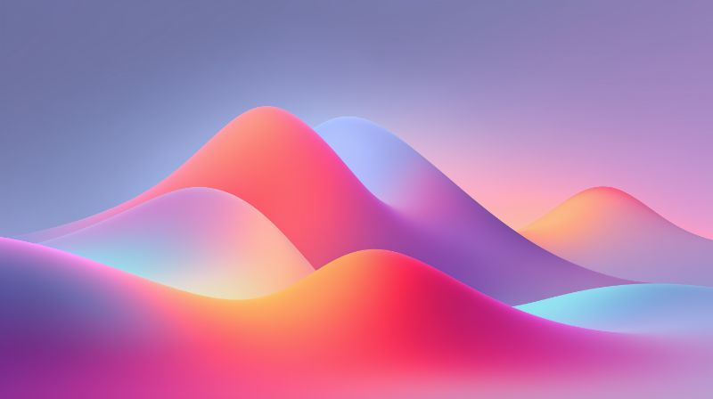

Today
08:30
Commute Route
Jordan • Transit 4
11:00
Product Sync
Sync
Remote • Alex
15:30
Dental Checkup
Clinic • Taylor
18:00
Evening Meal
Kitchen • Shared
Alex
Q4 Campaign Assets
Marketing Ops
Ensure the updated collateral is verified before our weekly alignment call.
10:42
Server Maintenance
DevOps
The planned downtime for the cluster upgrade is set for 02:00 UTC.
09:15
Alex
 Jordan
Jordan
Taylor

Audio • Jordan
Deep Focus Beats
Synthwave Mix
1:24
-2:21
Tech Podcast
Live Broadcast
LIVE
Alex
8,432
Jordan
3,120